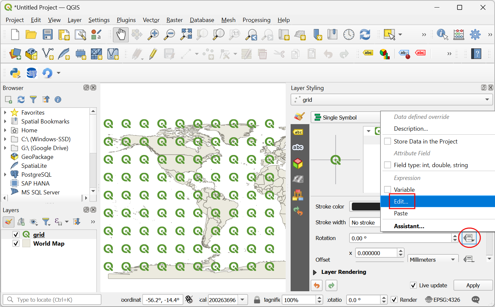
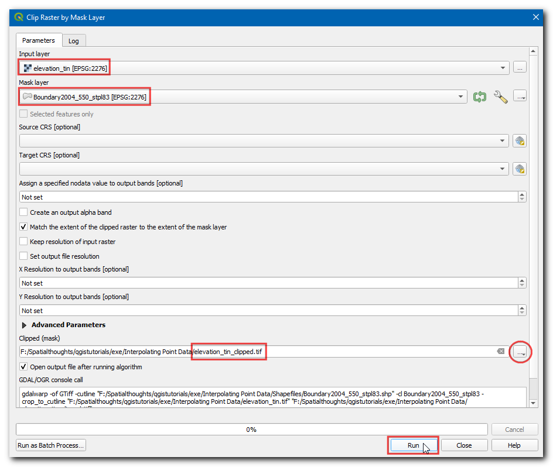
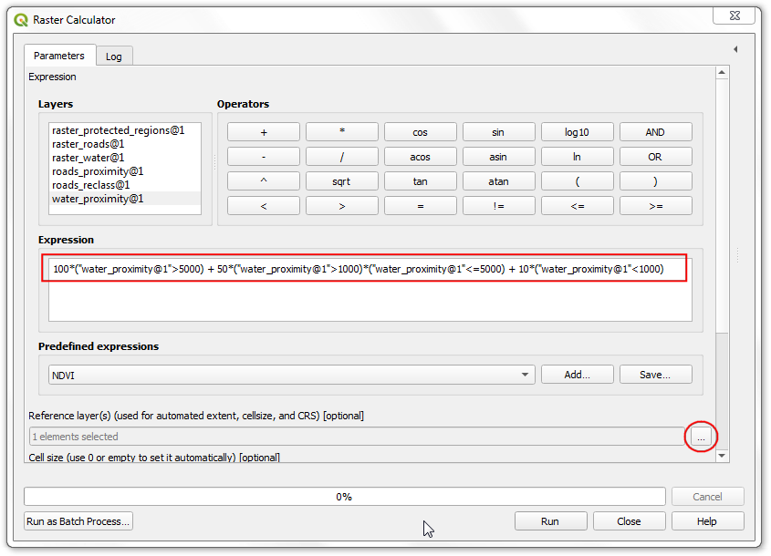
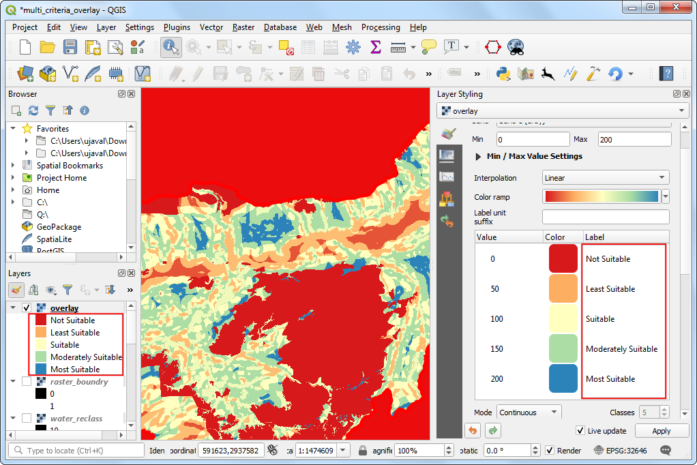

Erstellung einer Karte (QGIS3)¶
Oftmals ist die Erstellung einer Karte zum Druck oder zur Veröffentlichung erforderlich. In QGIS ist ein mächtiges Tool Drucklayout enthalten, dass es ermöglicht, die enthaltenen Layer zu einer Karte zu gestalten.
Überblick über die Aufgabe¶
Diese Anleitung zeigt die Erstellung einer Karte von Japan mit Standardkartenelementen wie Kartenausschnitt, Gitter, Nordpfeil, Maßstabsleiste und Beschriftungen.
Weitere Fähigkeitem die wir erlernen¶
Wie man sich Projekt-Variablen ansieht und sie verändert
Wie man QGIS Ausdrücke verwendet
Beschaffung der Daten¶
Wir verwenden einen Datensatz von Natural Earth, genauer gesagt das Natural Earth Quick Start Kit. Das Kit wird mit wunderschön gestalteten globalen Layern geliefert, die direkt in QGIS geladen werden können.
Download the Natural Earth Quickstart Kit. If the download link doesn’t work, get it directly from Natural Earth Downloads page.
Datenquelle [NATURALEARTH]
Arbeitsablauf¶
Wir laden die Daten des Natural Earth Quick Start Kit herunter und entpacken sie. Öffne QGIS. Gehe im Browser Bereich zum Ordner
Natural Earth quick start. Erweitere den Ordner und suche das ProjektNatural_Earth_quick_start_for_QGIS_v3. Dieses Projekt enthält die gestalteten Layer im QGIS Dateiformat. Klicke doppelt auf das Projekt, um es zu öffnen.

Bemerkung
If you get a pop-up dialog named Handle Unavailable Layers, click the Auto-Find button followed by Apply Changes to fix the error.
If your map is in your preferred language, you can proceed to Step 4. If not, you can change the language of the labels. This project uses variables to set the language. We can change the variables by going to .

Bemerkung
Projektvariablen sind eine großartige Form der Speicherung von projektspezifischen Werten. Man kann Werte in QGIS überall dort verwenden, wo Ausdrücke eingesetzt werden. Das Projekt Natural_Earth_quick_start_for_QGIS_v3 enthält bereits viele vordefinierte Variablen, die für die Gestaltung im Projekt verwendet werden.
Gehe im Dialogfenster Projekteigenschaften zum Feld Variablen. Gehe zur Variable
project_languageund klicke auf die Spalte Wert um sie anzupassen. Ändere die Sprache zuname_deund klicke auf OK.

Zurück im QGIS Fenster klicken wir auf den Knopf Aktualisieren in der Kartennavigationswerkzeugleiste. Die Beschriftungen werden nun in deutsch angezeigt.

Use the pan and zoom controls in the Map Navigation Toolbar and zoom to Japan.

Wir können einige Kartenlayer, die wir für diese Karte nicht benötigen, ausschalten. Erweitere die Gruppe
z5 - 1:18mund schalte die Layerne_10m_geography_marine_polysundne_10m_admin_0_disputed_areasaus. Bevor wir eine Karte zum Druck anpassen können, müssen wir eine passende Koordinatentransformation festlegen. Das im voreingestellte KBS istEPSG:3857 Pseudo-Mercator. Dabei handelt es sich um ein oft für web mapping genutztes KBS. Das KBS ist für unsere Zwecke gut geeignet, so dass wir es so belassen können. Gehe zu .

Bemerkung
Für Japan gibt es das KBS Japan Plane Rectangular CS. Es handelt sich um ein projiziertes Koordinatenreferenzsystem (KBS), das für minimale Verzerrungen erstellt wurde. Es ist in 18 Zonen unterteilt. Wenn man mit kleineren Regionen in Japan arbeit, ist dieses KBS besser geeignet.
Wir erhalten die Aufforderung, einen Drucklayout-Titel zu vergeben. Wir lassen das Eingabefeld leer und drücken auf Ok.

Bemerkung
Durch das Leerlassen wird ein Standardname wie Layout 1 verwendet.
Wir klicken im Drucklayoutfenster auf den Knopf Volle Ausdehnung, um die gesamte Größe des Layouts anzuzeigen.

Als nächstes müssen wir den Inhalt der QGIS Kartenansicht in das Layout übertragen. Wir gehen zu .

Nachdem der Modus Karte hinzufügen aktiv ist, ziehen wir mit der gedrückten linken Maustaste einen Rahmen für den Bereich der Karte auf.

Das rechteckige Fenster enthält jetzt den Karteninhalt aus der QGIS Kartenansicht. Es kann sein, dass nicht der gesamte gewünschte Inhalt angezeigt wird. Mit und können wir die Karte verschieben oder zentrieren.

Wir passen noch die Zoomstufe der Karte an. Klicke auf den Reiter Elementeigenschaften und gebe
10000000als Maßstab ein.

Als nächstes werden wir einen Kartenausschnitt mit einer vergrößerten Ansicht Tokios hinzufügen. Bevor wir eine Änderung im QGIS Hauptfenster vornehmen, setzen wir einen Haken bei Layer sperren und bei Layerstile sperren. Damit stellen wir sicher, dass sich das Layout beim Ausschalten oder Verändern der Darstellung einiger Layer nicht verändert.

Switch to the main QGIS window. Turn off the layer group
z5 - 1:18mand activate thez7 - 1: 4mgroup. This layer group has styling that is more appropriate for a zoomed-in view. Use the pan and zoom controls in the Map Navigation Toolbar and zoom around Tokyo.

Wir können nun den Kartenausschnitt hinzufügen. Gehe zum Drucklayout Fenster und dort zu .

An der Stelle, wo der Kartenausschnitt hinzugefügt werden soll, ziehen wir ein Rechteck auf. Wir haben jetzt 2 Kartenobjekte im Drucklayout. Bei Änderungen müssen wir darauf achten, dass wir die richtige Karte gewählt haben.

Wir wählen das Objekt
Karte 2, das wir gerade zum Elemente Reiter hinzugefügt haben. Wähle den Reiter Elementeigenschaften und scrolle nach unten bis zu Rahmen. Setze dort einen Haken. Man kann die Farbe und Dicke des Rahmens anpassen, so dass er sich gut vom Kartenhintergrund abhebt.

Ein praktisches Feature des Printlayouts ist, dass es automatisch den Teil der Karte hervorheben kann, das den Ausschnitt enthält. Wir wählen das Objekt
Karte 1aus dem Elemente Reiter. Im Reiter Elementeigenschaften scrollen wir nach unten zu Übersichten. Hier klicken wir auf den Knopf Eine neue Übersicht hinzufügen.

Wähle
Karte 2als Kartenrahmen. Damit erkennt das Drucklayout, dass inKarte 1der Bereich derKarte 2hervorgehoben werden soll.

Nachdem wir den Kartenausschnitt fertiggestellt haben, fügen wir ein Gitter zur Hauptkarte hinzu. Wähle das Objekt
Karte 1im Reiter Elemente. Scrolle im Reiter Elementeigenschaften nach unten bis zu Gitter. Klicke auf den Knopf Neues Gitter hinzufügen und danach auf Gitter ändern….

Als Voreinstellung verwenden die Gitterlinien dieselbe Einheit und Projektion wie das Kartenprojekt. Allerdings ist es üblicher, die Gitterlinien in Grad anzuzeigen. Wir können für die Gitterlinien ein abweichendes KBS verwenden. Klicke auf den Knopf Ändern… neben KBS.

Im Dialogfenster Koordinatenbezugssystem-Auswahl geben wir
4326im Feld Filter ein. Aus den Ergebnissen wählen wirWGS84 EPSG:4326als KBS. Klicke auf OK.

Wir wählen als Intervall Werte von
5Grad sowohl für die X als auch für die Y Richtung. Man kann den Versatz anpassen, um festzulegen, wo die Gitterlinien beginnen.

wir scrollen im Reiter Elementeigenschaften weiter nach unten und setzen einen Haken bei Koordinaten zeichnen. Die Voreinstellung sind
Gradim numerischen Format. Mit einer Anpassung kann das ° Symbol angehängt werden. Wir wählenAngepasstund klicken auf den Knopf Ausdruck daneben.

Verwende den folgenden Ausdruck, um eine Zeichenkette zu erstellen, die das ° Symbol an die Gitternummer anhängt.
concat(to_string(@grid_number), '° ')
Wir sehen, dass die Gitter jetzt eine entsprechend des Ausdrucks angepasste Beschriftung verwenden. Die Lage der Beschriftung können wir mit Hilfe der Parameter bei Links, Rechts, Oben und Unten anpassen.

Als Nächstes fügen wir einen rechteckigen Rahmen für andere Kartenelemente wir Norpfeil, Maßstabsleiste und Beschriftung hinzu. Wir gehen zu .

Wir können die Stil des Rechtecks anpassen, so dass er zum Kartenhintergrund passt.

Wir werden nun einen Nordpfeil zur Karte hinzufügen. QGIS enthält eine schöne Sammlung an Bildern zur Kartengestaltung, u.a. auch viele Arten von Nordpfeilen. Klicke auf .

Holding your left mouse button, draw a rectangle. On the right-hand panel, click on the Item Properties tab and select the SVG image section and scroll down to find arrows from the SVG Groups. Select the image of your liking.

Jetzt fügen wir eine Maßstabsleiste hinzu. Gehe zu .

Klicke im Kartenlayout auf die Stelle, an der die Maßstabsleiste dargestellt werden soll. Im Reiter Elementeigenschaften stellen wir sicher, dass die richtige Karte
Karte 1gewählt ist. Wähle einen Stil aus. Im Bereich Segmente ändern wir Feste Breite zu200Einheiten und passen die Segmente an unsere Wünsche an.

Jetzt müssen wir unsere Karte noch beschriften. Klicke auf .

Klicke dort auf die Karte wo das Label erscheinen soll. Im Reiter Elementeigenschaften erweitern wir den Bereich Beschriftung und vergeben eine Beschriftung für die Karte. Genauso können wir weitere Angaben zur Daten- und Softwarequelle hinzufügen.

Wenn wir mit der Darstellung zufrieden sind, können wir die Karte als Bild, PDF oder SVG exportieren. Für dieses Tutorial exportieren wir als Bild. Klicke auf .

Speichere das Bild im gewünschten Format. Unten ist das exportierte Bild im PNG Format.

If you want to give feedback or share your experience with this tutorial, please comment below. (requires GitHub account)